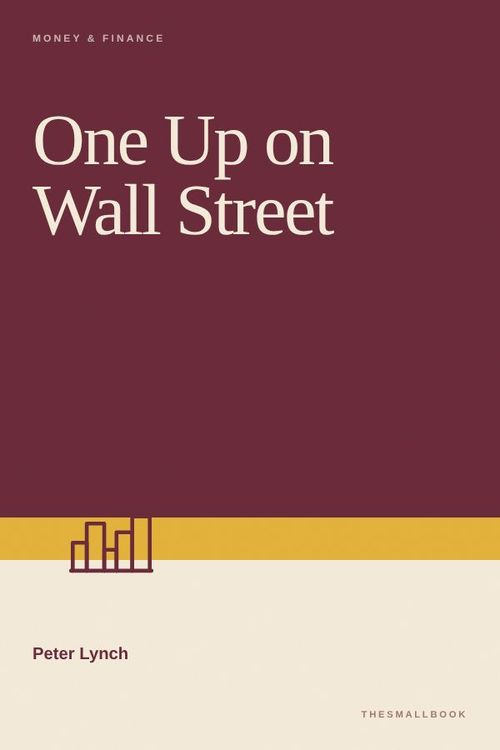

Library › Ask the Library › How do I pick individual stocks?
How do I pick individual stocks?
The short answer
Start from what you know, the brands you use daily. Classify the company, write a two-minute story, check price vs growth, and know your sell signal BEFORE you buy.
The books behind the answer

One Up on Wall Street
Peter Lynch · 1989 · 8 min · 6 lessons
You already know more than the experts about the companies you use daily. Buy what you know - after doing the homework.
- Buy What You Know: You meet winners before Wall Street does, at the mall, the clinic, your own kitchen.
- Classify the Company Before You Buy: Six classes, six rulebooks: fast grower, stalwart, cyclical, turnaround, asset play, slow grower.
- The Two-Minute Drill and the Earnings Line: If you can't explain why you own it in two minutes, you don't own it, you gamble on it.
- Know the Story, Then Know When to Sell: Sell when the story changes, not when the price wobbles.
A failure that proves it
Why did Bunker Hunt fail?
1980 · MONEY · Loss: The Hunt brothers lost ~$1.5B of their own fortune
The Hunt brothers cornered silver and lost a billion dollars. Even conviction needs a margin of safety.
No position is too big to fail - the market is bigger than anyone. Leverage multiplies confidence into ruin: genius plus leverage equals fragility. Diversify, stay humble, and never bet the fortune on one conviction.
Questions people ask next
Can I read this in Hindi?
Yes. This answer is written in simple English. Open any linked book and choose Hindi or Hinglish to read the full lessons in your language, with audio where available.